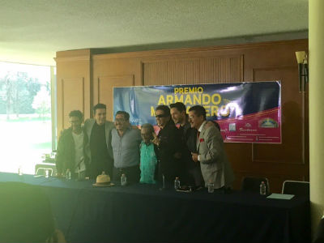

Boletín Informativo
#Informe - Enero 2017
Un año fértil para la Sociedad de Autores y Compositores de México
#PalabraDeAutor - Enero 2017

María Cristina García Cepeda, siempre respetuosa del Derecho de Autor
En la Sociedad de Autores y Compositores de México celebramos el nombramiento de nuestra entrañable María Cristina García Cepeda como secretaria de Cultura del Gobierno Federal. El histórico logro del presidente de la República Enrique Peña Nieto y de Rafael Tovar y de Teresa de fundar una Secretaría de Cultura para México ha quedado en las manos de una mujer ejemplar, que ha alentado la creación artística desde diferentes trincheras, siempre respetuosa del Derecho de Autor, y con un profundo conocimiento y compromiso para dignificar y difundir la música mexicana de concierto y el noble arte de los compositores de la música popular.
Gracias querida secretaria de Cultura, con usted hemos podido realizar innumerables proyectos culturales. Los Autores y Compositores le refrendamos nuestro cariño y apoyo en esta nueva encomienda para potenciar lo mejor que tiene México: su cultura, un poderoso recurso para iluminar y embellecer la imagen de México en el mundo.
#DíaDelCompositor - Enero 2017
"Los compositores son ejemplo de creatividad y sensibilidad. Con sus obras alimentan nuestra vida. Feliz #DiaDelCompositor" Ma Cristina Garcia C @mcristina_gc 15 ene
El 15 de enero de 1965, la Sociedad de Autores y Compositores de México instituyó la celebración del Día del Compositor en honor a la fecha --15 de enero de 1945-- en que SACM quedó formalmente constituida ante la Secretaría de Educación Pública. Fue a partir de 1983 que el Día del Compositor extendió su festejo a cada uno de los rincones del país, congregando cada año, a partir de entonces, a creadores de todos los géneros musicales y de todas latitudes de la República Mexicana. Para el maestro Armando Manzanero, el Día del Compositor es ya una tradición que nos recuerda la importancia que tienen las canciones y la música que conforman la identidad nacional. La relevancia de esta celebración y el liderazgo de SACM para crear una nueva cultura en defensa del Derecho de Autor detonó que en cada uno de los estados de la República autores y compositores se reúnan para festejar el noble arte de componer música y canciones, y para mostrar a un gremio unido frente a los desafíos que impone la nueva era digital. Autores, compositores, políticos, secretarios de Estado, funcionarios y artistas manifestaron su admiración y respeto a quienes con su talento han escrito, nota por nota, letra por letra el gran libro de la armonía nacional.
Presentan Premio Armando Manzanero
 El miércoles 5 de abril se llevó a cabo, en la Casa Alfonso Esparza Oteo, una rueda de prensa para dar a conocer los detalles del Premio Armando Manzanero, enfocado a incentivar la composición en nuestro país.
En el evento estuvieron presentes los maestros Mónica Vélez, Armando Manzanero, Alex Lora y José Cantoral, entre otros.
Este certamen pretende ser una plataforma para compositores que no han encontrado la vía para difundir su trabajo. La convocatoria ya se encuentra abierta.